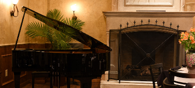

Ristorante
Tradizionale Dining
Relax in our traditional dining room featuring a Mediterranian atmosphere. Whether you're looking for a romantic dinner for two or dining with family and friends, old world charm provides the perfect ambience for a memorable dining experience.
Chez Savalle
It started with a dream. Dave McConnell was just beginning to hone his craft as a singer of the American songbook. One night he dreamed that he was walking down a street. Mansions with wrought iron fences stood to either side. Ahead, he saw a piano in the yard of a beautiful home. Seated behind the keyboard, facing Dave, was a distinguised African American gentleman. A jazz pianist. Dave was entranced by the man as he continued walking towards him. Then the pianist turned to him and said, "Your place is gonna be Chez Savalle".
On our "Serate di Musica", Music Nights, you can find Dave or other singers and musicians performing jazz standards and pop favorites accompanied by some of Huntsville's most accomplished jazz and musical theater pianists.
The quarters are cozy, as one would expect for a European style venue; classy, yet inviting with a sense of casual elegance. The fireplace anchors the room and the traditional oak bar with its brass top is the perfect place to enjoy fine wine or a favorite cocktail.
Enjoy the musical atmosphere of Chez Savalle any night, whether you're stopping in for a drink and appetizers, or enjoying a four course dinner of Luciano's Italian "Culinario".
Cortile
Four steps down from Chez Savalle Piano Bar, you are suddenly transported into the courtyard of a small Italian village. Looking around, you have the sense that quaint apartments overlook the tables nesteled in the square. The high ceiling gives the room an airy feel, while the open wall back into Chez Savalle allows you enjoy "Serate di Musica", Music Nights from our live piano bar.
Adding to the room's charm, a bit of Huntsville history adorns the Cortile. The antique shutters of the windows, and glass door of the balcony hail from the original Monte Sano Hotel, a three-story Queen Anne–style luxury health resort that opened in 1877
Terrazza
For those that delight in "Al Fresco" dining, we offer our beautiful Terrazza. Leisurely sip a glass of wine while you read a book, converse with friends, or simply enjoy the soft summer breeze. Our moderate southern climate allows for comfortable outdoor dining from March through October.